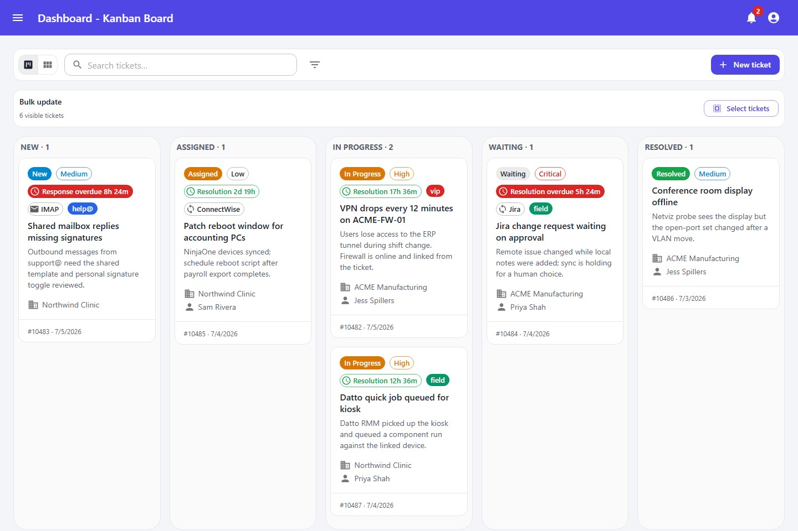
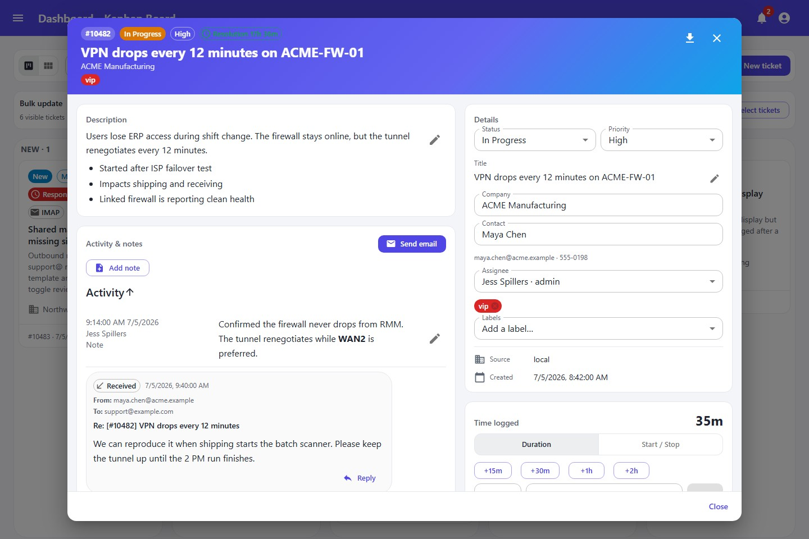
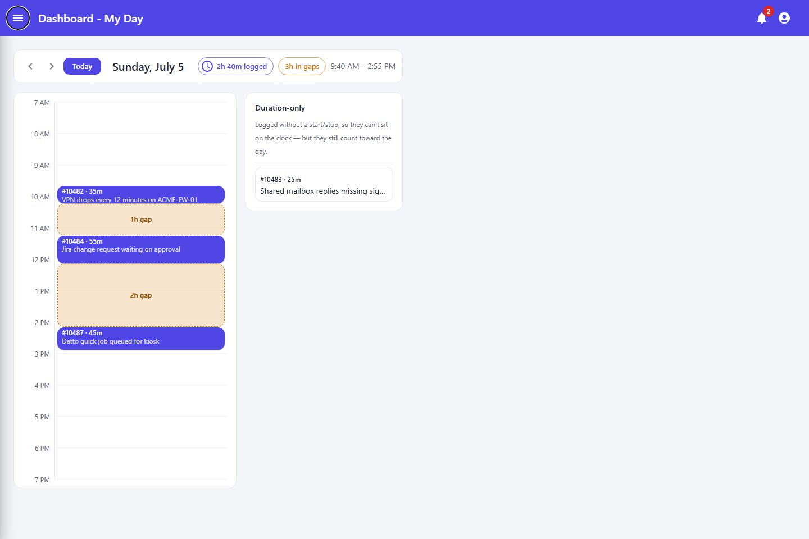
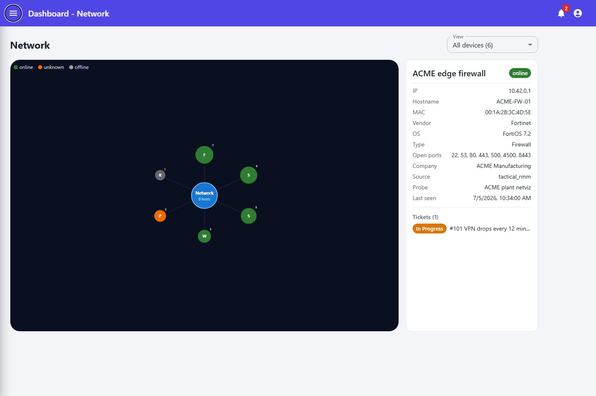
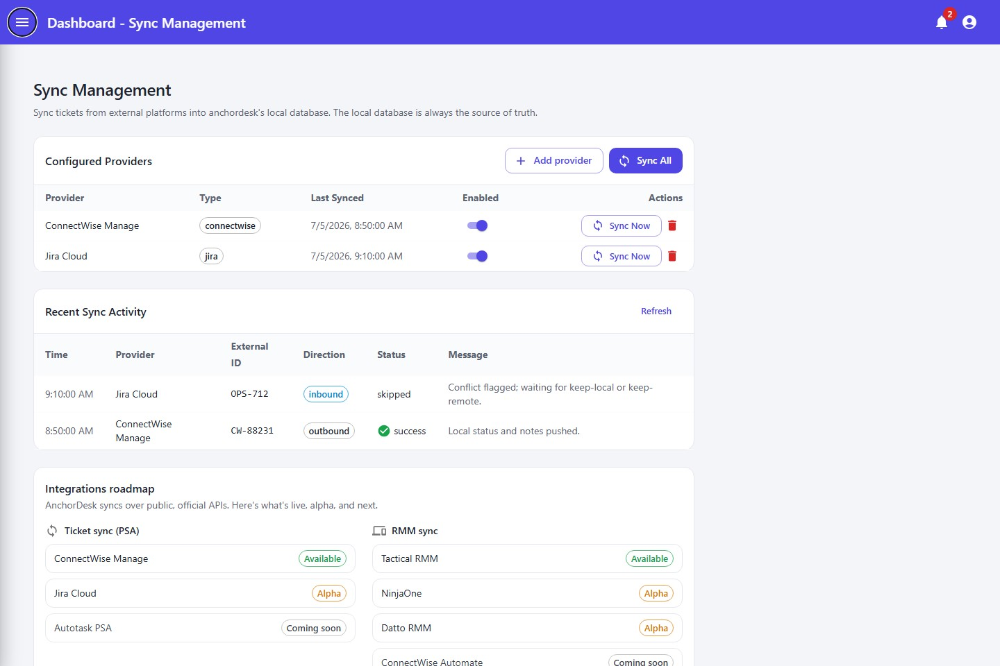

Rich ticket modal
Description, notes, and email now share one editor.
Formatted HTML renders safely, plain text stays plain, and the visual/source toggle is available where rich text is edited.
A self-hosted ticketing and IT operations console where PostgreSQL is the source of truth, tickets know the machines behind them, and MCP/OAuth gives agents a first-class way in.
The newest work is focused on the parts techs touch all day: rich ticket text, a separate note composer, page-scoped bulk updates, and faster company/contact selection.
Formatted HTML renders safely, plain text stays plain, and the visual/source toggle is available where rich text is edited.
The activity card has its own rich note composer, and edited notes now persist instead of disappearing into a console log.
Cards, the board, and the legacy table can update status, priority, and assignee with optimistic feedback.
Descriptions and rich notes are sanitized on save, previews strip HTML, and printable exports preserve safe formatting.
These are generated from the current web client with mocked API data, so the GitHub Pages site can carry screenshots without needing a live backend.





The app favors practical feedback: closing work falls off the board, and OAuth/MCP discovery has a short, explicit consent loop.
AnchorDesk can run standalone, then attach the pieces of your MSP or IT stack as adapters.
Create, assign, filter, label, bulk update, and work tickets from card, board, and optional legacy table views.
Poll multiple mailboxes, dedupe by Message-ID, tag subjects with public ticket numbers, and reply with identities, templates, signatures, Cc/Bcc, and inline images.
Netviz probes and RMM syncs populate devices, which can be company-scoped and linked directly to the tickets they affect.
Tactical RMM, NinjaOne, and Datto adapters can sync devices and execute scripts or quick jobs, with output retained against the ticket.
ConnectWise Manage and Jira Cloud can pull and push ticket state, hold conflicts, and ask a human to keep local or remote changes.
Local accounts, OIDC, SAML, TOTP MFA, personal access tokens, and built-in OAuth for MCP all resolve to a real user and role.
Ticket lists, board cards, open modals, the notification bell, and SLA state update without refresh.
Drag/drop files onto tickets, store bytes locally or in S3-compatible storage, and export a printable ticket with safe inline activity.
Managed changes append before/after values with the user and channel, including web, API token, and MCP activity.
UI, IMAP, ConnectWise, Jira, and API-created tickets normalize into PostgreSQL.
Probes and RMMs upsert device records, which can be linked to companies and tickets.
Technicians send mail, log time, run scripts, attach files, and reconcile sync conflicts without leaving the ticket.
MCP clients authenticate with personal tokens or AnchorDesk's built-in OAuth authorization server, so RBAC and audit attribution still apply.
# PostgreSQL and Adminer docker compose up -d db adminer # Backend config and schema cp backend/.env.example backend/.env cd backend npm install npx prisma db push npm start # :8060 # Web client cd ../web-client npm install npm run dev # :5173 # Current images ghcr.io/spillers-technology/anchordesk-backend:1.17.0 ghcr.io/spillers-technology/anchordesk-web-client:1.17.0
Credentials seed from environment variables and can be managed later from Admin. Alpha providers are gated until configured.
Email-to-ticket, shared/personal send-from identities, templates, signatures, inline images, and attachments.
Inbound and outbound ticket sync with notes, sync states, and conflict handling.
Two-way issue sync using Jira Cloud v3, ADF bodies, and status transitions.
Device sync, live agent snapshots, script catalog, run-now, scheduled jobs, and ticket output.
OAuth client credentials, device sync, live snapshots, and saved automation script runs.
Device sync and async quick jobs by component UID, with job status retained.
LAN discovery posts devices into AnchorDesk and feeds the radial Network view.
Local disk, AWS S3, MinIO, Cloudflare R2, and Backblaze B2 are supported attachment stores.
Start with the README for setup, then branch into architecture, MCP auth, schema, and provider extension docs.
Free and open source under MIT, with Docker Compose, Kubernetes manifests, GHCR images, and docs that now match the current app.